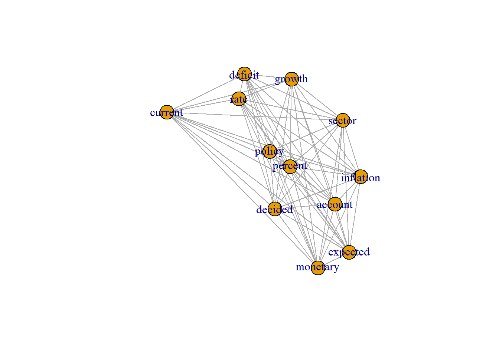
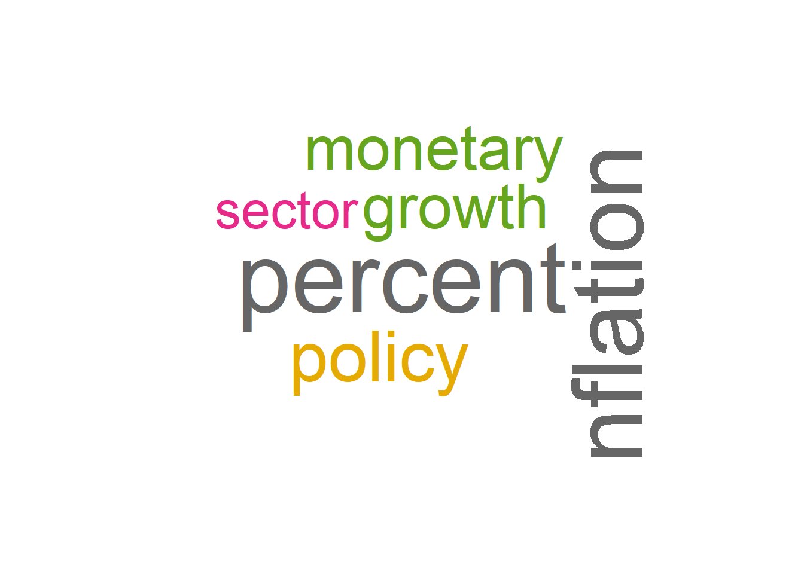
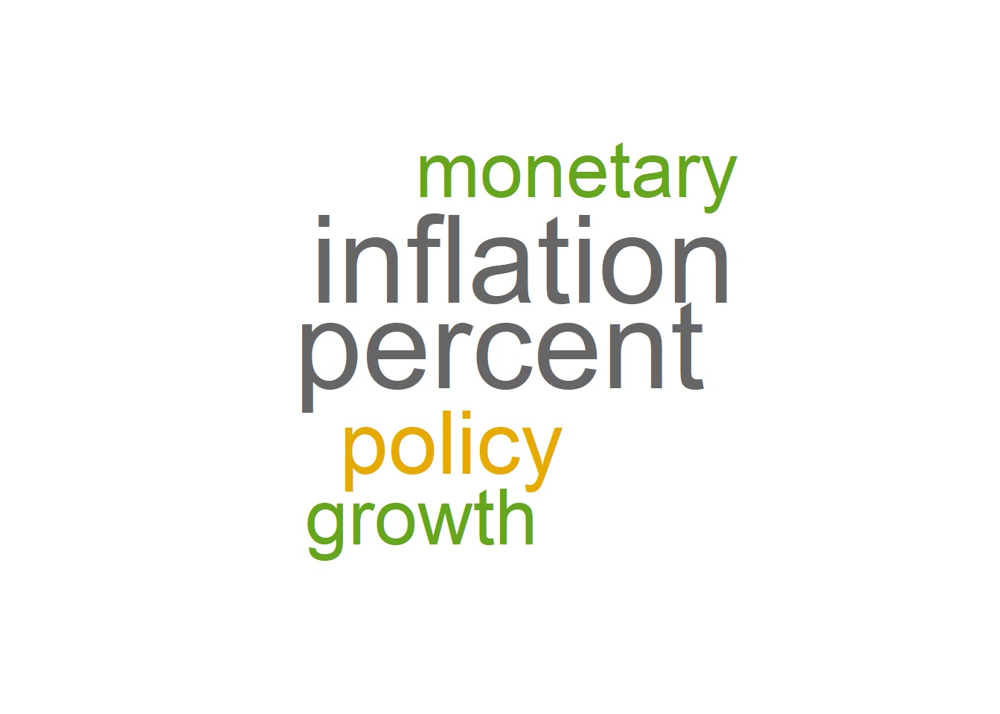
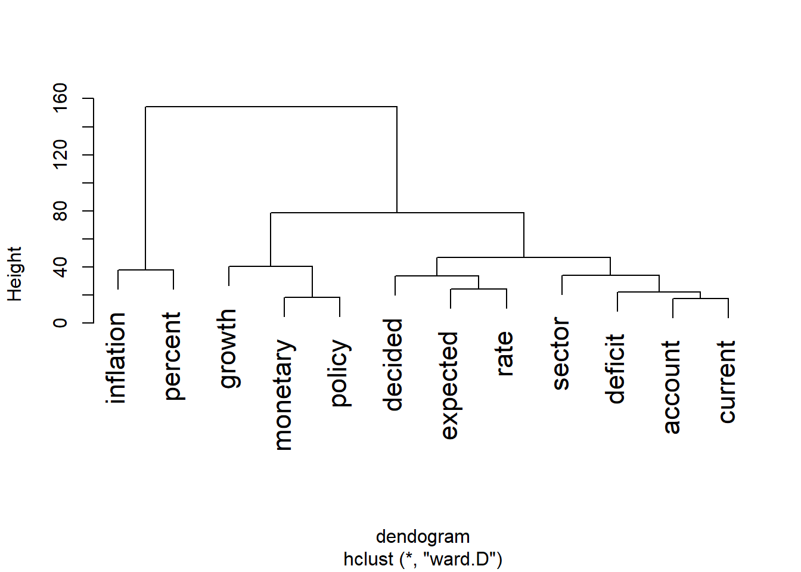
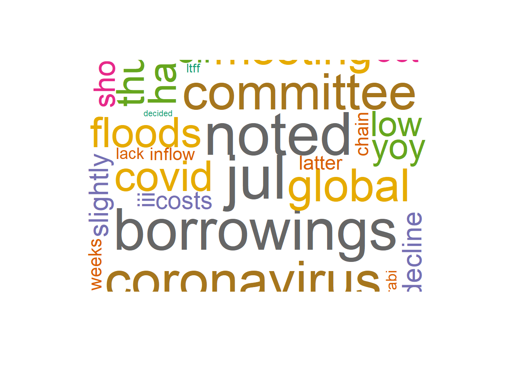

<<SimpleCorpus>>
Metadata: corpus specific: 1, document level (indexed): 0
Content: documents: 1
01012018.txt
MONETARY POLICY COMMITTEE\n STATE BANK OF PAKISTAN\nMonetary Policy Statement\nJanuary 2018\n\nPakistan’s economic growth is on track to achieve its highest level in the last eleven years. Average\nheadline inflation remains within the forecast range of SBP, but core inflation has continued to\nincrease. Fiscal deficit for H1-FY18 is expected to fall close to the last year’s 2.5 percent. There has\nbeen visible improvement in export growth and remittances are marginally higher. However, largely\ndue to high level of imports the current account deficit remains under pressure. The exchange rate\nadjustment in December 2017 is expected to help ease the pressure on the external front.\n\nThe progress in the real sector indicates that agriculture sector is set to perform better for the\nsecond year in a row. Production of all major Kharif crops, except maize, has surpassed the level of\nFY17. Similarly, large scale manufacturing (LSM) recorded a healthy broad-based growth of 7.2\npercent during Jul-Nov FY18 as compared to 3.2 percent during the same period last year. While\nthere could be some deceleration in LSM growth due to sector specific issues such as sugar, POL\nand fertilizer, overall industrial activity is likely to remain strong. Benefiting from both infrastructure\nand CPEC related investments, construction and its allied industries are expected to maintain their\nhigher growth momentum. After incorporating the impact of commodity sector dynamics on the\nservices sector, the real GDP growth is projected to be around 5.8 percent, significantly higher than\nFY17, but marginally lower than the annual target of 6 percent for FY18. This is largely due to\nexpectations of a below-target wheat crop because of a reduction in area under cultivation.\n\nAverage headline inflation for H1-FY18 stands at 3.8 percent. Meanwhile, core inflation (non-food-\nnon-energy) continued to maintain its higher trajectory, and clocked in at 5.5 percent during the first\nhalf of the year as compared to 4.9 percent last year. This together with a lagged impact of PKR\ndepreciation and rising international oil prices are likely to increase inflation in the coming months.\nTaking into account the impact of all these developments, while the average inflation for FY18 is\nstill projected to fall in the range of 4.5 to 5.5 percent, end of fiscal year YoY inflation is likely to\ninch towards the annual target of 6 percent.\n\nBroad money supply grew marginally by 1.9 percent during 1st Jul-12th Jan FY18.. This is a reflection\nof the decline in NFA and government efforts to contain expenditures. Higher tax collection and\nproceeds from the issuance of Sukuk and Eurobond have led to reduction in net budgetary\nborrowing which stood at Rs. 401.9 billion during 1st Jul-12th Jan FY18 as compared to Rs. 470.4\nbillion in the corresponding period of the previous year. Moreover, the delay in the sugar crushing\nseason also contributed to a moderation of demand in private sector credit.\n\nOn the external front, export receipts posted the highest growth in the last seven years of 10.8\npercent in H1-FY18 against a reduction of 1.4 percent in H1-FY17. Worker’s remittances also\nrecorded growth (2.5 percent) during the first half of the year as compared to a decline in the same\nperiod last year. However, favorable impact of these positives was overshadowed by the\ncontinuation of strong growth in imports of goods and services. The current account deficit\nwidened to US$ 7.4 billion during the first half of the year, which was 1.6 times of the deficit during\nthe same period last year. Developments in financial accounts show that one-fifth of this deficit was\nfinanced by healthy foreign direct investments inflows, and the rest was managed by the official\nflows and the country’s own resources. As a result, SBP’s liquid foreign exchange reserves\n\n Page 1\n\n MONETARY POLICY COMMITTEE\n STATE BANK OF PAKISTAN\nwitnessed a decline of US$ 2.6 billion since end June 2017 to reach US$ 13.5 billion as of 19th\nJanuary 2018. Going forward, the PKR depreciation in December 2017, the export package, the\nlagged impact of adjustments in regulatory duties, favorable external environment, and expected\nincrease in workers’ remittances, will contribute to a gradual reduction in the country’s current\naccount deficit. While increase in international oil prices pose a major risk to this assessment,\nmanaging overall balance of payments in near term depends on the realization of official financial\nflows.\n\nFour key factors of Pakistan’s economy have witnessed important changes since November 2017\nimpinging upon the policy rate decision. Firstly, PKR has depreciated by around 5 percent.\nSecondly, oil prices are hovering near USD 70 per barrel. Thirdly, a number of central banks have\nstarted to adjust their policy rates upwards adversely affecting PKR interest-rate differentials vis-à-\nvis their currencies. Fourthly, multiple indicators show that the output gap has significantly\nnarrowed indicating a buildup of demand pressures.\n\nBased on these developments, MPC is of the view that in order to preempt overheating of the\neconomy and inflation breaching its target rate, this is the right time to make a policy decision that\nwould balance growth and stability in the medium to long term. Accordingly, the Monetary Policy\nCommittee has decided to raise the policy rate by 25 bps to 6.00 percent.\n\n\n\n\n Page 2\n Text Mining Monetary Policy Statements
A Primer
1 Introduction
Dealing with text is typically not considered as important in training of economics and social sciences training for data analysis. This is in direct contrast with how often it has to be dealt with prior to more common analysis, or how interesting it might be to have text be the focus of analysis Text Analysis in R. This document and corresponding workshop will aim to provide a sense of the things one can do with text, and the sorts of analyses that might be useful.
With this motivation, we apply textual analysis to monetary policy statements by the State Bank of Pakistan (SBP) which is aimed at understanding the monetary policy stance of the central bank. The monetary policy statement (MPS) is a document that is released by the central bank to communicate its monetary policy stance to the public. The MPS is released after the Monetary Policy Committee (MPC) meeting, which is held every two months. The MPS contains information on the current state of the economy, the central bank’s assessment of the economy, and the central bank’s monetary policy stance. The MPS is an important document for the public, as it provides information on the central bank’s monetary policy stance, which can have implications for the economy.
Unstructured data, often rich in textual content, encompasses a wide array of sources such as news articles, social media posts, Twitter feeds, transcriptions from videos, and formal documents. Its abundance offers fresh opportunities and simultaneous challenges for researchers and research institutions alike. In this paper, I explore various methodologies for text analysis and propose a systematic approach to leverage text mining techniques. Furthermore, I examine potential empirical applications of these methods. This paper focuses on the primer of extracting information from unstructured data, and the potential applications of text mining in the context of monetary policy statements. Quantitative analysis of text data is a rapidly growing field, and the methods and techniques used in this paper are not exhaustive. These methods are in extensive use in political science, sociology, linguistics and information security but are not in wide use in economics and finance in Pakistan. Nevertheless, there is a growing interest in the use of text mining in economics and finance, and this paper aims to provide a starting point for researchers interested in text mining and its applications in economics and finance. Recent advances in open source software and the availability of large text datasets have made it easier for researchers to apply text mining techniques to their research. As text data is usually unstructured, therefore, it is important that a reproducible and systematic approach is used to extract information from text data. This paper/tutorial aims to provide a systematic approach to text mining, and to demonstrate the potential applications of text mining in the context of monetary policy statements. Monetary policy and fiscal policy are two of the most important tools that governments and central banks use to manage the economy. Monetary policy refers to the actions taken by the central bank to influence the money supply and interest rates in the economy. The central bank uses monetary policy to achieve its objectives, such as price stability, full employment, and economic growth. The central bank uses a variety of tools to implement monetary policy, such as open market operations, discount rate changes, and reserve requirement changes. The central bank communicates its monetary policy stance to the public through monetary policy statements. Therefore, it is important to analyze these statements to understand the central bank’s monetary policy stance. Text mining techniques can be used to extract information from monetary policy statements, and to analyze the central bank’s monetary policy stance. This paper/tutorial aims to provide a systematic approach to text mining, and to demonstrate the potential applications of text mining in the context of monetary policy statements.
Monetary policy statements are an important source of information for researchers, as they provide information on the central bank’s monetary policy stance, which can have implications for the economy. I have extracted monetary policy statements from the State Bank of Pakistan (SBP) website, and used text mining techniques to extract information from these statements.
The paper is organized as follows. Section 2 provides an overview of text mining and its applications in economics and finance. Section 3 provides a systematic approach to text mining, and Section 4 provides an overview of the potential applications of text mining in the context of monetary policy statements. Section 5 concludes the paper.
2 Theoretical Background
The principal goal of text mining is to capture and analyze all possible meanings embeded in text. Text mining transform unstructured data into structured data, and to extract information from text data. Text mining is a rapidly growing field, and has applications in a wide range of fields, such as information retrieval, natural language processing, and data mining. Text mining techniques can be used to analyze the content of text data, and to identify patterns and trends in the text data. Text mining techniques can be used to analyze the sentiment of text data, and to identify the sentiment of the text data. Text mining techniques can also be used to classify text data, and to categorize the text data. Text mining techniques can be used to extract information from text data, and to analyze the text data. Text mining techniques can be used to analyze the content of text data, and to identify patterns and trends in the text data. Text mining techniques can also be used to summarize the content of text data, and to extract information from the text data. Text mining techniques can be used to analyze the sentiment of text data, and to identify the sentiment of the text data. Text mining techniques can also be used to classify text data, and to categorize the text data. Text mining techniques can be used to extract information from text data, and to analyze the text data. Text mining techniques can be used to analyze the content of text data, and to identify patterns and trends in the text data. Text mining techniques can also be used to summarize the content of text data, and to extract information from the text data. Text mining techniques can be used to analyze the sentiment of text data, and to identify the sentiment of the text data. Text mining techniques can also be used to classify text data, and to categorize the text data. Text mining techniques can be used to extract information from text data, and to analyze the text data. Text mining techniques can be used to analyze the content of text data, and to identify patterns and trends in the text data. Text mining techniques can also be used to summarize the content of text data, and to extract information from the text data. Text mining techniques can be used to analyze the sentiment of text data, and to identify the sentiment of the text data. Text mining techniques can also be used to classify text data, and to categorize the text data.
3 Data
Ten years data of monetary policy statements is extracted from the SBP website. There are total 65 MPS documents from 2014 to 2024 I have used in this analysis. Couple of statements are missing from the website. The data is in PDF format and I have used the pdftools package to extract the text from the PDF files. The text is then cleaned and preprocessed to remove any unwanted characters and symbols. The text is then tokenized and converted to a document term matrix. The document term matrix is then used to analyze the text data. ‘tm’ package is used to clean and preprocess the text data, and to create the document term matrix. tidyverse and tidytext packages are used to analyze the text data and visualize data. I have used tm package to store data as corpus. There are other forms of data storage in R such as tibble and dataframe but I have used tm package to store data as corpus.
All 65 MPS are stored as .txt files in a directory and then read into R using tm package. The text is then cleaned and preprocessed to remove any unwanted characters and symbols. The text is then tokenized and converted to a document term matrix. The document term matrix is then used to analyze the text data. ‘tm’ package is used to clean and preprocess the text data, and to create the document term matrix.
[1] "01012018.txt" "02032023.txt" "04042023.txt" "05102012.txt" "07072022.txt"
[6] "07082022.txt" "08032022.txt" "08062012.txt" "08102011.txt" "09042016.txt"
[11] "10102022.txt" "12042013.txt" "12062023.txt" "12092015.txt" "12122023.txt"
[16] "13042012.txt" "13112013.txt" "14072018.txt" "14092023.txt" "14122012.txt"
[21] "14122021.txt" "15032014.txt" "15052020.txt" "15112014.txt" "16042020.txt"
[26] "16072019.txt" "16092019.txt" "17032020.txt" "17052014.txt" "19032021.txt"
[31] "19112021.txt" "20052017.txt" "20052019.txt" "20092014.txt" "20092021.txt"
[36] "21032015.txt" "21052011.txt" "21052016.txt" "21062013.txt" "21092020.txt"
[41] "21112015.txt" "22012021.txt" "22072017.txt" "22082022.txt" "22112019.txt"
[46] "23012023.txt" "23052015.txt" "23052022.txt" "23112020.txt" "24012022.txt"
[51] "24032020.txt" "24052010.txt" "24092016.txt" "24112009.txt" "24112017.txt"
[56] "25032017.txt" "25052018.txt" "25062020.txt" "25112022.txt" "26032011.txt"
[61] "26062023.txt" "26112017.txt" "27032010.txt" "27072021.txt" "28012017.txt"
[66] "28012020.txt" "28052021.txt" "29012024.txt" "29032019.txt" "29092010.txt"
[71] "29092017.txt" "29092018.txt" "29112010.txt" "30012016.txt" "30032018.txt"
[76] "30072016.txt" "30102023.txt" "30112011.txt" "30112018.txt" "31012019.txt"
[81] "31072023.txt"3.1 Cleaning and Preprocessing
The text data is cleaned and preprocessed to remove any unwanted characters and symbols. The text data is then tokenized and converted to a document term matrix. The document term matrix is then used to analyze the text data. ‘tm’ package is used to clean and preprocess the text data, and to create the document term matrix. All the tokens not necessarily carry meaningful information. Text cleaning (or text preprocessing) makes an unstructured set of texts uniform across and within and eliminates idiosyncratic characters or meaningless terms.6 Text cleaning can be loosely divided into a set of steps as shown below. Numbers can also be removed from the text data using tm_map(corpus, removeNumbers). Therefore, it is important to remove the stop words from the text data. Stop words are the most common words in a language, such as ‘the’, ‘is’, ‘at’, ‘which’, and ‘on’. These words do not carry much meaning, and can be removed from the text data. The tm package is used to remove the stop words from the text data. However, before removing stopwords, all words are converted to lowercase to make the text uniform. corpus <- tm_map(corpus, tolower
# Using this function to remove idiosyncratic characters, numbers/punctuation, stop-words
toSpace <- content_transformer(function(x, pattern){return (gsub(pattern, " ", x))})
corpus <- tm_map(corpus, toSpace, "-")
corpus <- tm_map(corpus, toSpace, ")")
corpus <- tm_map(corpus, toSpace, ":")
corpus <- tm_map(corpus, toSpace, "%")
corpus <- tm_map(corpus, toSpace, "@")
corpus <- tm_map(corpus, toSpace, " - ")
corpus <- tm_map(corpus, toSpace, "\n")
corpus <- tm_map(corpus, toSpace, ",")
#corpus <- tm_map(corpus, toSpace, ".")
corpus <- tm_map(corpus, function(x) iconv(x, to='latin1', sub='byte'))
corpus <- tm_map(corpus, removeNumbers)
corpus <- tm_map(corpus, stripWhitespace)
corpus <- tm_map(corpus, removePunctuation)
corpus <- tm_map(corpus, stripWhitespace)
inspect(corpus[1])<<SimpleCorpus>>
Metadata: corpus specific: 1, document level (indexed): 0
Content: documents: 1
01012018.txt
MONETARY POLICY COMMITTEE STATE BANK OF PAKISTAN Monetary Policy Statement January Pakistans economic growth is on track to achieve its highest level in the last eleven years Average headline inflation remains within the forecast range of SBP but core inflation has continued to increase Fiscal deficit for H FY is expected to fall close to the last years percent There has been visible improvement in export growth and remittances are marginally higher However largely due to high level of imports the current account deficit remains under pressure The exchange rate adjustment in December is expected to help ease the pressure on the external front The progress in the real sector indicates that agriculture sector is set to perform better for the second year in a row Production of all major Kharif crops except maize has surpassed the level of FY Similarly large scale manufacturing LSM recorded a healthy broad based growth of percent during Jul Nov FY as compared to percent during the same period last year While there could be some deceleration in LSM growth due to sector specific issues such as sugar POL and fertilizer overall industrial activity is likely to remain strong Benefiting from both infrastructure and CPEC related investments construction and its allied industries are expected to maintain their higher growth momentum After incorporating the impact of commodity sector dynamics on the services sector the real GDP growth is projected to be around percent significantly higher than FY but marginally lower than the annual target of percent for FY This is largely due to expectations of a below target wheat crop because of a reduction in area under cultivation Average headline inflation for H FY stands at percent Meanwhile core inflation non food non energy continued to maintain its higher trajectory and clocked in at percent during the first half of the year as compared to percent last year This together with a lagged impact of PKR depreciation and rising international oil prices are likely to increase inflation in the coming months Taking into account the impact of all these developments while the average inflation for FY is still projected to fall in the range of to percent end of fiscal year YoY inflation is likely to inch towards the annual target of percent Broad money supply grew marginally by percent during st Jul th Jan FY This is a reflection of the decline in NFA and government efforts to contain expenditures Higher tax collection and proceeds from the issuance of Sukuk and Eurobond have led to reduction in net budgetary borrowing which stood at Rs billion during st Jul th Jan FY as compared to Rs billion in the corresponding period of the previous year Moreover the delay in the sugar crushing season also contributed to a moderation of demand in private sector credit On the external front export receipts posted the highest growth in the last seven years of percent in H FY against a reduction of percent in H FY Workers remittances also recorded growth percent during the first half of the year as compared to a decline in the same period last year However favorable impact of these positives was overshadowed by the continuation of strong growth in imports of goods and services The current account deficit widened to US billion during the first half of the year which was times of the deficit during the same period last year Developments in financial accounts show that one fifth of this deficit was financed by healthy foreign direct investments inflows and the rest was managed by the official flows and the countrys own resources As a result SBPs liquid foreign exchange reserves Page MONETARY POLICY COMMITTEE STATE BANK OF PAKISTAN witnessed a decline of US billion since end June to reach US billion as of th January Going forward the PKR depreciation in December the export package the lagged impact of adjustments in regulatory duties favorable external environment and expected increase in workers remittances will contribute to a gradual reduction in the countrys current account deficit While increase in international oil prices pose a major risk to this assessment managing overall balance of payments in near term depends on the realization of official financial flows Four key factors of Pakistans economy have witnessed important changes since November impinging upon the policy rate decision Firstly PKR has depreciated by around percent Secondly oil prices are hovering near USD per barrel Thirdly a number of central banks have started to adjust their policy rates upwards adversely affecting PKR interest rate differentials vis à vis their currencies Fourthly multiple indicators show that the output gap has significantly narrowed indicating a buildup of demand pressures Based on these developments MPC is of the view that in order to preempt overheating of the economy and inflation breaching its target rate this is the right time to make a policy decision that would balance growth and stability in the medium to long term Accordingly the Monetary Policy Committee has decided to raise the policy rate by bps to percent Page corpus <- tm_map(corpus, tolower)
#corpus <- tm_map(corpus, stripWhitespace)
corpus <- tm_map(corpus, removeWords, stopwords("english"))
#corpus <- tm_map(corpus, stemDocument)
corpus <- tm_map(corpus, removeWords, c( "end", "also", "age",
"analysis", "number", "two", "three",
"minut", "third", "fourth", "spokesperson",
"staff", "like", "five", "four",
"topf", "governor", "six","state","bank","year",
"page","pakistan", "sbp","mpc","november","october","june","july","may",
"august","september","december","january","february","march","april"))
corpus <- tm_map(corpus, stripWhitespace)Below is the text left from corpus after removing the stop words.
monetary policy committee monetary policy statement ’s economic growth track achieve highest level last eleven years average headline inflation remains within forecast range core inflation continued increase fiscal deficit h fy expected fall close last ’s percent visible improvement export growth remittances marginally higher however largely due high level imports current account deficit remains pressure exchange rate adjustment expected help ease pressure external front progress real sector indicates agriculture sector set perform better second row production major kharif crops except maize surpassed level fy similarly large scale manufacturing lsm recorded healthy broad based growth percent.
One final step is to stem the words. Stemming is the process of reducing words to their root form. For example, the words ‘running’, ‘runs’, and ‘ran’ are all reduced to the root form ‘run’. The tm package is used to stem the words in the text data.
Once we have cleaned and preprocessed the text data, we can convert the text data to a document term matrix (dtm)
# Converting the corpsus into Document Term Matrix
# Choosing words with length between 3 and 12 characters
dtm <- DocumentTermMatrix(corpus, control=list(wordLengths=c(3, 12))) # https://en.wikipedia.org/wiki/Document-term_matrixNow we create a matrix with term frequencies
termFreq <- colSums(as.matrix(dtm))
head(termFreq)accordingly account accounts achieve activity adjust
12 331 26 35 137 4 tail(termFreq) twelve defense emerged notified recalibrate serve
1 1 1 1 1 1 # Removing some of the most sparse terms
dtm.sparse <- removeSparseTerms(dtm,0.05)
dim(dtm.sparse)[1] 81 12term.frequencies <- colSums(as.matrix(dtm.sparse))
order.frequencies <- order(term.frequencies)
term.frequencies[head(order.frequencies)] # View DTM by word frequency using head/tail functions decided expected rate deficit account current
85 286 306 330 331 387 term.frequencies[tail(order.frequencies)] sector monetary growth policy inflation percent
415 511 520 604 897 905 find.frequency.terms.100 <- findFreqTerms(dtm.sparse,lowfreq=100)
find.frequency.terms.100 [1] "account" "current" "deficit" "expected" "growth" "inflation"
[7] "monetary" "percent" "policy" "rate" "sector" find.frequency.terms.200 <- findFreqTerms(dtm.sparse,lowfreq=200)
find.frequency.terms.200 [1] "account" "current" "deficit" "expected" "growth" "inflation"
[7] "monetary" "percent" "policy" "rate" "sector" find.frequency.terms.300 <- findFreqTerms(dtm.sparse,lowfreq=300)
find.frequency.terms.300 [1] "account" "current" "deficit" "growth" "inflation" "monetary"
[7] "percent" "policy" "rate" "sector" find.frequency.terms.500 <- findFreqTerms(dtm.sparse,lowfreq=500)
find.frequency.terms.500[1] "growth" "inflation" "monetary" "percent" "policy" find.frequency.terms.700 <- findFreqTerms(dtm.sparse,lowfreq=700)
find.frequency.terms.700[1] "inflation" "percent" 4 Plotting data
corlimit <- 0.4
title <- ""
freq.term.tdm <- findFreqTerms(dtm,lowfreq=150)
plot(dtm,main=title,cex.main = 3, term=freq.term.tdm, corThreshold=corlimit,
attrs=list(node=list(width=15,fontsize=40,fontcolor=129,color="red")))
# Creating Corpus Histogram
sorted.frequencies <- sort(colSums(as.matrix(dtm.sparse)), decreasing=TRUE)
head(sorted.frequencies, 20) percent inflation policy growth monetary sector current account
905 897 604 520 511 415 387 331
deficit rate expected decided
330 306 286 85 word.frequencies.frame <- data.frame(word=names(sorted.frequencies), freq=sorted.frequencies)
head(word.frequencies.frame,10) word freq
percent percent 905
inflation inflation 897
policy policy 604
growth growth 520
monetary monetary 511
sector sector 415
current current 387
account account 331
deficit deficit 330
rate rate 306word.frequencies.frame <- word.frequencies.frame[order(-sorted.frequencies),]# Plotting Frequencies
# Term appears at least 100 times in the corpus (can be customized)
plotted.frequencies <- ggplot(subset(word.frequencies.frame, freq>100), aes(reorder(word, -freq), freq))
plotted.frequencies <- plotted.frequencies + geom_bar(stat="identity")
plotted.frequencies <- plotted.frequencies + theme(axis.text.x=element_text(angle=45, hjust=1, size=18))
plotted.frequencies <- plotted.frequencies + theme(axis.text=element_text(size=17), axis.title=element_text(size=16,face="bold"))
# plotted.frequencies <- plotted.frequencies + theme(panel.background = element_rect(fill = 'white'))
plotted.frequencies <- plotted.frequencies + xlab("Corpus Terms")
plotted.frequencies <- plotted.frequencies + ylab("Frequencies")
plotted.frequencies # Printing word frequencies
# Plotting Frequencies (term appears at least 200 times in the corpus)
plotted.frequencies <- ggplot(subset(word.frequencies.frame, freq>200), aes(reorder(word, -freq), freq))
plotted.frequencies <- plotted.frequencies + geom_bar(stat="identity")
plotted.frequencies <- plotted.frequencies + theme(axis.text.x=element_text(angle=45, hjust=1, size=18))
plotted.frequencies <- plotted.frequencies + theme(axis.text=element_text(size=17), axis.title=element_text(size=16,face="bold"))
#plotted.frequencies <- plotted.frequencies + theme(panel.background = element_rect(fill = 'white'))
plotted.frequencies <- plotted.frequencies + xlab("Corpus Terms")
plotted.frequencies <- plotted.frequencies + ylab("Frequencies")
plotted.frequencies #printing word frequencies
# Dendogram Figure
dendogram <- dist(t(dtm.sparse), method="euclidian")
dendogram.fit <- hclust(d=dendogram, method="ward.D")
plot(dendogram.fit, cex=1.4, main="", cex.main=6)
# Adjacency Figure
dtm.sparse.matrix <- as.matrix(dtm.sparse)
tdm.sparse.matrix <- t(dtm.sparse.matrix)
tdm.sparse.matrix <- tdm.sparse.matrix %*% dtm.sparse.matrix
graph.tdm.sparse <- graph.adjacency(tdm.sparse.matrix, weighted=T, mode="undirected")
graph.tdm.sparse <- simplify(graph.tdm.sparse)
# Visualizing the Adjacency Figure
plot.igraph(graph.tdm.sparse, layout=layout.fruchterman.reingold(graph.tdm.sparse, niter=10, area=120*vcount(graph.tdm.sparse)^2),
vertex.color = 169)5 Word Cloud
The wordcloud package is used to visualize the text data. The word cloud is a visual representation of the frequency of words in the text data. The size of the word in the word cloud is proportional to the frequency of the word in the text data. The wordcloud package is used to create the word cloud. The word cloud is created using the document term matrix. The word cloud is used to identify the most frequent words in the text data.
# Wordclouds
set.seed(142) # This is just the design of the wordcloud picture, can be changed (use same seed)
pal2 <- brewer.pal(8,"Dark2") # This is just the design of the wordcloud picture, can be changed
wordcloud(names(term.frequencies), term.frequencies, min.freq=50, random.order=FALSE, colors=pal2, scale=c(5.2, .7)) # Can be changed depending on the desired term frequency
wordcloud(names(term.frequencies), term.frequencies, min.freq=100, random.order=FALSE, colors=pal2, scale=c(5.2, .7)) # Can be changed depending on the desired term frequency
wordcloud(names(term.frequencies), term.frequencies, min.freq=200, random.order=FALSE, colors=pal2, scale=c(5.2, .7)) # Can be changed depending on the desired term frequency
wordcloud(names(term.frequencies), term.frequencies, min.freq=300, random.order=FALSE, colors=pal2, scale=c(5.2, .7))wordcloud(names(term.frequencies), term.frequencies, min.freq=400, random.order=FALSE, colors=pal2, scale=c(5.2, .7))
wordcloud(names(term.frequencies), term.frequencies, min.freq=500, random.order=FALSE, colors=pal2, scale=c(5.2, .7))
5.1 Weighting Scheme
Another weighting scheme - term frequency/inverse document frequency is given here to create word clouds. The term frequency/inverse document frequency is a statistical measure used to evaluate the importance of a word in a document relative to a collection of documents.
# Another weighting scheme - term frequency/inverse document frequency
# Wordclouds w. tf-idf
# Creating a new dtm with tf-idf weighting instead of term frequency weighting
dtm.tf.idf <- DocumentTermMatrix(corpus, control = list(weighting = weightTfIdf, wordLengths=c(3, 12)))
dtm.tf.idf.sparse<-removeSparseTerms(dtm.tf.idf,0.95)
dim(dtm.tf.idf.sparse) [1] 81 1160term.frequencies.tf.idf <- colSums(as.matrix(dtm.tf.idf.sparse))
sorted.frequencies.tf.idf <- sort(colSums(as.matrix(dtm.tf.idf.sparse)), decreasing=TRUE)
head(sorted.frequencies.tf.idf, 20) jul noted borrowings coronavirus committee global
0.2841889 0.2759655 0.2673504 0.2441497 0.2295718 0.2025230
meeting recovery covid floods system economy
0.1977287 0.1942000 0.1863952 0.1823993 0.1822402 0.1697131
half market month debt banking views
0.1683789 0.1666185 0.1665209 0.1658002 0.1652578 0.1650299
thus improved
0.1646712 0.1616948 word.frequencies.frame.tf.idf <- data.frame(word=names(sorted.frequencies.tf.idf), freq=sorted.frequencies.tf.idf)
head(word.frequencies.frame.tf.idf) word freq
jul jul 0.2841889
noted noted 0.2759655
borrowings borrowings 0.2673504
coronavirus coronavirus 0.2441497
committee committee 0.2295718
global global 0.2025230# Barplot of tf-idf terms
plotted.frequencies.tf.idf <- ggplot(subset(word.frequencies.frame.tf.idf, freq>0.5), aes(reorder(word, -freq), freq))
plotted.frequencies.tf.idf <- plotted.frequencies.tf.idf + geom_bar(stat="identity")
plotted.frequencies.tf.idf <- plotted.frequencies.tf.idf + theme(axis.text.x=element_text(angle=45, hjust=1, size=18))
plotted.frequencies.tf.idf <- plotted.frequencies.tf.idf + theme(axis.text=element_text(size=17), axis.title=element_text(size=17))
# plotted.frequencies <- plotted.frequencies + theme(panel.background = element_rect(fill = 'white'))
plotted.frequencies.tf.idf <- plotted.frequencies.tf.idf + xlab("Corpus Terms")
plotted.frequencies.tf.idf <- plotted.frequencies.tf.idf + ylab("Frequencies")
plotted.frequencies.tf.idf #printing word frequencies
# Wordclouds with tf-idf
set.seed(142) # This is just the design of the wordcloud picture, can be changed (use same seed)
pal2 <- brewer.pal(8,"Dark2")
wordcloud(names(term.frequencies.tf.idf), term.frequencies.tf.idf, min.freq=0.05, random.order=FALSE, colors=pal2, scale=c(6, .4))
wordcloud(names(term.frequencies.tf.idf), term.frequencies.tf.idf, min.freq=0.10, random.order=FALSE, colors=pal2, scale=c(6, .4))wordcloud(names(term.frequencies.tf.idf), term.frequencies.tf.idf, min.freq=0.30, random.order=FALSE, colors=pal2, scale=c(5, .6))wordcloud(names(term.frequencies.tf.idf), term.frequencies.tf.idf, min.freq=0.40, random.order=FALSE, colors=pal2, scale=c(5, .6))
wordcloud(names(term.frequencies.tf.idf), term.frequencies.tf.idf, min.freq=0.50, random.order=FALSE, colors=pal2, scale=c(5, .6))Document term matrix is a matrix that contains the frequency of words in the text data. The rows of the matrix represent the documents, and the columns represent the words. The matrix contains the frequency of each word in each document. The document term matrix is used to analyze the text data, and to identify patterns and trends in the text data. The tm package is used to create the document term matrix. After cleaning and preprocessing the text data, the text data is tokenized and converted to a document term matrix. The document term matrix is then used to analyze the text data. The goal of dtm is two fold. The first is to present the topic of each document by the frequency of semantically significant and unique terms, and second, to position the corpus for future data analysis. The term frequency-inverse document frequency (tf-idf) is a numerical statistic that is intended to reflect how important a word is to a document in a collection or corpus. It is often used as a weighting factor in information retrieval and text mining. The tf-idf value increases proportionally to the number of times a word appears in the document and is offset by the number of documents in the corpus that contain the word, which helps to adjust for the fact that some words appear more frequently in general. The tm package is used to create the document term matrix.
Why is frequency of each word is important? Simple frequency of each word is inappropiate because it can overstate the importance of small words that happen to be frequent. The term frequency-inverse document frequency (tf-idf) is a numerical statistic that is intended to reflect how important a word is to a document in a collection or corpus. It is often used as a weighting factor in information retrieval and text mining. The tf-idf value increases proportionally to the number of times a word appears in the document and is offset by the number of documents in the corpus that contain the word, which helps to adjust for the fact that some words appear more frequently in general. tf-idf is defined as follows:
tf(t)= (Number of times term t appears in a document) / (Total number of terms in the document)
A more appropriate way to calaculate word frequencies is to employ the tf-idf weighting scheme. The tf-idf value increases proportionally to the number of times a word appears in the document and is offset by the number of documents in the corpus that contain the word, which helps to adjust for the fact that some words appear more frequently in general.
ifd(t)= log_e(Total number of documents / Number of documents with term t in it)
Conjugating the two gives the tf-idf score for each word in each document. 𝚝𝚏−𝚒𝚍𝚏(𝑡)=𝚝𝚏(𝑡)×𝚒𝚍𝚏(𝑡)
5.2 Tidytext data table
Now I shall use tidytext with the help of unnest_tokens to convert one word per row.
# Creating Corpus Histogram w. Tf-Idf Weighting
word.frequencies.frame.tf.idf <- data.frame(word=names(sorted.frequencies.tf.idf), freq=sorted.frequencies.tf.idf)
head(word.frequencies.frame.tf.idf,10) word freq
jul jul 0.2841889
noted noted 0.2759655
borrowings borrowings 0.2673504
coronavirus coronavirus 0.2441497
committee committee 0.2295718
global global 0.2025230
meeting meeting 0.1977287
recovery recovery 0.1942000
covid covid 0.1863952
floods floods 0.1823993word.frequencies.frame.tf.idf <- word.frequencies.frame.tf.idf[order(-sorted.frequencies.tf.idf),]
# Plotting Frequencies
plotted.frequencies.tf.idf <- ggplot(subset(word.frequencies.frame.tf.idf, freq>0.15), aes(reorder(word, -freq), freq))
plotted.frequencies.tf.idf <- plotted.frequencies.tf.idf + geom_bar(stat="identity")
plotted.frequencies.tf.idf <- plotted.frequencies.tf.idf + theme(axis.text.x=element_text(angle=45, hjust=1, size=18))
plotted.frequencies.tf.idf <- plotted.frequencies.tf.idf + theme(axis.text=element_text(size=17), axis.title=element_text(size=17))
# plotted.frequencies <- plotted.frequencies + theme(panel.background = element_rect(fill = 'white'))
plotted.frequencies.tf.idf <- plotted.frequencies.tf.idf + xlab("Corpus Terms")
plotted.frequencies.tf.idf <- plotted.frequencies.tf.idf + ylab("Frequencies w. tf-idf Weighting")
plotted.frequencies.tf.idf # printing word frequencies# Dendogram Figure
tdm.tf.idf.sparse <- as.matrix(t(dtm.tf.idf.sparse))
tdm.tf.idf.sparse <- tdm.tf.idf.sparse %*% t(tdm.tf.idf.sparse)
dtm.tf.idf.sparse.095 <- removeSparseTerms(dtm.tf.idf, 0.05)
dendogram <- dist(t(dtm.tf.idf.sparse.095), method="euclidian")
dendogram.fit <- hclust(d=dendogram, method="ward.D")
plot(dendogram.fit, cex=1.4, main="", cex.main=4)dev.off()null device
1 # HeatMap w. Tf-Idf (change format)
dtm.tf.idf.sparse.matrix <- as.matrix(dtm.tf.idf.sparse)
# rownames(dtm.tf.idf.sparse.matrix) <- document.corpus.names.df$date
# arrange(document.corpus.names.df, date)
date.dtm.tf.idf.sparse.matrix <- cbind(dtm.tf.idf.sparse.matrix,document.corpus.names.df$date)
my_palette <- colorRampPalette(c("white", "pink", "red"))(n = 99) # Heatmaps
pdf('D:/RepTemplates/mps/sbp/heatmaps.pdf')
heatmap.2(date.dtm.tf.idf.sparse.matrix[1:12,1:18],
main = "", # heat map title
dendrogram = "none",
keysize = 1,
margins = c(5, 5), # Adjusted margin values
density.info = "none", # turns off density plot inside color legend
trace = "none", # turns off trace lines inside the heat map
col = my_palette, # use on color palette defined earlier
srtCol = 45,
cexCol = 1.4,
Colv = "NA") # turn off column clustering
heatmap.2(date.dtm.tf.idf.sparse.matrix[13:24,1:18],
main = "Frequencies", # heat map title
dendrogram = "none",
keysize = 1,
margins = c(5, 5), # Adjusted margin values
density.info = "none", # turns off density plot inside color legend
trace = "none", # turns off trace lines inside the heat map
col = my_palette, # use on color palette defined earlier
srtCol = 45,
cexCol = 1.4,
Colv = "NA") # turn off column clustering
heatmap.2(date.dtm.tf.idf.sparse.matrix[25:36,1:18],
main = "Frequencies", # heat map title
dendrogram = "none",
keysize = 1,
margins = c(5, 5), # Adjusted margin values
density.info = "none", # turns off density plot inside color legend
trace = "none", # turns off trace lines inside the heat map
col = my_palette, # use on color palette defined earlier
srtCol = 45,
cexCol = 1.4,
Colv = "NA") # turn off column clustering
dev.off()png
2 6 Exploratory Data Analysis
With conversion to dtm, exploratory data analysis is performed to identify patterns and trends in the text data.
order.frequencies<-order(term.frequencies)
head(order.frequencies,6)
tail(order.frequencies,6)6.1 Word counting
Dictionary-based text analysis is popular approach mainly because its easy to implement and interpret. The dictionary-based approach is based on the idea that the frequency of certain words in a text can be used to infer the sentiment of the text. However, sentiment words from one discipline to another might be different. For example, words used in psychology to express positive sentiments might be different from words used in economics. Therefore, it is important to use a dictionary that is specific to the discipline. The tidytext package is used to count the frequency of words in the text data. The get_sentiments function is used to get the sentiment words from the dictionary. In this document, I am using Loughran and McDonald dictionary to count the frequency of positive and negative words in the text data.
dictionary.finance.negative < - read.csv("negative.csv", stringsAsFactors=FALSE)[,1]
dictionary.finance.positive < - read.csv("positive.csv", stringsAsFactors=FALSE)[,1]It is important to be careful in use of words to be positive or negative. For example, the word ‘increase’ is generally considered to be positive, but in the context of inflation, it is considered to be negative. Similarly the word ‘decrease’ is generally considered to be negative, but in the context of inflation, it is considered to be positive. Another example is tight and loose monetary policy. The word tight is generally considered to be positive, but in the context of monetary policy, it is considered to be negative. Similarly, the word loose is generally considered to be negative, but in the context of monetary policy, it is considered to be positive. Therefore, it is important to be careful in use of words to be positive or negative.
dictionary.negative < -tolower(dictionary.negative)dictionary.negative < -stemDocument(dictionary.negative)dictionary.negative < -unique(dictionary.negative)Next we use the match function that compares the terms in both dictionary and the text data. The match function returns the position of the first match. If there is no match, the match function returns NA. The match function is used to count the frequency of positive and negative words in the text data.
corpus.terms < - colnames(dtm)positive.matches < - match(corpus.terms, dictionary.positive, nomatch=0)negative.matches < - match(corpus.terms, dictionary.negative, nomatch=0)We then assign a value of 1 to the positive and negative matches. The ifelse function is used to assign a value of 1 to the positive and negative, and measure the overall sentiment for each document \(i\) by the following formula: \(Score_i = \frac{Positive_i - Negative_i}{Positive_i + Negative} \in [-1,1]\)
A document is considered to be positive if the score is greater than 0, and negative if the score is less than 0.
document.score=sum(positive.matches) - sum(negative.matches)
scores.data.frame= data.frame(scores= document.score) 6.2 Relative frequency
The relative frequency of positive and negative words is calculated by dividing the frequency of positive and negative words by the total number of words in the text.
wordscore.estimation.results < - wordfish(corpus,dir
= c(1,5))6.3 Semantic analysis
The semantic analysis is performed to identify the semantic orientation of the text data. The semantic orientation is the degree to which a word is positive or negative. The semantic orientation is calculated by dividing the frequency of positive words by the frequency of negative words. The semantic orientation is calculated for each document in the text data.
lsa_model < - textmodel_lsa(dtm)lsa_predict < - predict(lsa_model)7 Topic models
Topic modeling is a type of statistical model for discovering the abstract “topics” that occur in a collection of documents. Topic modeling is a frequently used text-mining tool for discovery of hidden semantic structures in a text body. Intuitively, given that a document is about a particular topic, one would expect particular words to appear in the document more or less frequently: “dog” and “bone” will appear more often in documents about dogs, “cat” and “meow” will appear in documents about cats, and “the” and “is” will appear equally in both. A document typically concerns multiple topics in different proportions; thus, in a document that is 10% about cats and 90% about dogs, there would probably be about 9 times more dog words than cat words. The “topics” produced by topic modeling techniques are clusters of similar words. A topic model captures this intuition in a mathematical framework, which allows examining a set of documents and discovering, based on the statistics of the words in each, what the topics might be and what each document’s balance of topics is.
library(topicmodels)
#Gibbs Sampling Calibration
burnin <- 4000
iter <- 1500
thin <- 500
seed <-list(2003,5,63,100001,765)
nstart <- 5
best <- TRUE
# Number of topics
# This is arbitrary, need to make educated guess/play around with data
k <- 4
# Run LDA using Gibbs sampling
lda.results <-LDA(dtm.sparse, k, method="Gibbs", control=list(nstart=nstart, seed = seed, best=best, burnin = burnin, iter = iter, thin=thin))
# Write out results
# Docs to topics
lda.topics <- as.matrix(topics(lda.results))
# write.csv(ldaOut.topics,file=paste("LDAGibbs",k,"DocsToTopics.csv"))
lda.topics [,1]
01012018.txt 1
02032023.txt 4
04042023.txt 1
05102012.txt 1
07072022.txt 4
07082022.txt 2
08032022.txt 3
08062012.txt 3
08102011.txt 1
09042016.txt 2
10102022.txt 3
12042013.txt 2
12062023.txt 3
12092015.txt 3
12122023.txt 1
13042012.txt 3
13112013.txt 3
14072018.txt 3
14092023.txt 4
14122012.txt 3
14122021.txt 3
15032014.txt 4
15052020.txt 2
15112014.txt 3
16042020.txt 2
16072019.txt 2
16092019.txt 1
17032020.txt 4
17052014.txt 3
19032021.txt 4
19112021.txt 3
20052017.txt 1
20052019.txt 2
20092014.txt 1
20092021.txt 1
21032015.txt 1
21052011.txt 3
21052016.txt 3
21062013.txt 2
21092020.txt 1
21112015.txt 1
22012021.txt 4
22072017.txt 1
22082022.txt 2
22112019.txt 3
23012023.txt 1
23052015.txt 2
23052022.txt 4
23112020.txt 1
24012022.txt 3
24032020.txt 2
24052010.txt 3
24092016.txt 2
24112009.txt 1
24112017.txt 1
25032017.txt 3
25052018.txt 1
25062020.txt 4
25112022.txt 1
26032011.txt 1
26062023.txt 2
26112017.txt 4
27032010.txt 1
27072021.txt 3
28012017.txt 2
28012020.txt 4
28052021.txt 4
29012024.txt 1
29032019.txt 3
29092010.txt 1
29092017.txt 1
29092018.txt 2
29112010.txt 4
30012016.txt 3
30032018.txt 1
30072016.txt 2
30102023.txt 4
30112011.txt 3
30112018.txt 2
31012019.txt 3
31072023.txt 1# Top 6 terms in each topic
lda.results.terms <- as.matrix(terms(lda.results,11))
# write.csv(ldaOut.terms,file=paste("LDAGibbs",k,"TopicsToTerms.csv"))
lda.results.terms Topic 1 Topic 2 Topic 3 Topic 4
[1,] "growth" "policy" "percent" "inflation"
[2,] "percent" "rate" "current" "monetary"
[3,] "sector" "expected" "account" "percent"
[4,] "policy" "monetary" "deficit" "decided"
[5,] "expected" "decided" "policy" "policy"
[6,] "inflation" "percent" "decided" "rate"
[7,] "account" "sector" "expected" "current"
[8,] "current" "account" "growth" "deficit"
[9,] "decided" "current" "inflation" "account"
[10,] "deficit" "deficit" "monetary" "expected"
[11,] "monetary" "growth" "rate" "growth" # Probabilities associated with each topic assignment
topic.probabilities <- as.data.frame(lda.results@gamma)
write.csv(topic.probabilities,file=paste("LDAGibbs", k ,"TopicProbabilities.csv"))
topic.probabilities <- as.matrix(topic.probabilities)
# Probabilities for each term in each topic.
posterior.terms <- t(posterior(lda.results)$terms)
# Heatmaps with topic modeling
# This is set manually by considering the words appearing in each list
colnames(topic.probabilities) <- c("Policy Rate", "Inflation", "Monetary Policy", "Current Account")
# rownames(topic.probabilities) <- document.corpus.names.df$date
date.topic.probabilities <- cbind(document.corpus.names.df$date, topic.probabilities)7.1 Heatmap
The heatmap is used to visualize the frequency of positive and negative words in the text data. The heatmap function is used to create the heatmap. The heatmap function takes the frequency of positive and negative words as input and creates the heatmap. The heatmap function is used to create the heatmap. The heatmap function takes the frequency of positive and negative words as input and creates the heatmap.
pdf('D:/RepTemplates/mps/sbp/heatmaps_lda.pdf')
heatmap.2(date.topic.probabilities[1:12, ],
main = "",
dendrogram = "none",
keysize = 1,
margins = c(10, 8),
density.info = "none",
trace = "none",
col = my_palette,
srtCol = 45,
cexCol = 1.4,
Colv = "NA")
dev.off()png
2 7.2 Wordfish
# Converting our corpus into another format
quanteda.corpus <- corpus(corpus)
dfm.corpus <- dfm(quanteda.corpus)
rownames(dfm.corpus) <- rownames(document.corpus.names.df)
# Defining which documents in the corpus represent the most dovish and the most hawkish positions
dovish <- which(rownames(dfm.corpus) %in% "15032014" | rownames(dfm.corpus) %in% "29012024")
hawkish <- which(rownames(dfm.corpus) %in% "17052014" | rownames(dfm.corpus) %in% "15112014")
# Running the wordfish algorithm
wordfish <- textmodel_wordfish(dfm.corpus, dir = c(dovish, hawkish))
#summary(wordfish, n = 10)
# coef(wordfish) |> head(10)
# str(wordfish)
# Extracting estimated parameters
documents <- wordfish$docs
theta <- wordfish$theta
se.theta <- wordfish$se.theta
predicted.wordfish <- predict(wordfish, interval = "confidence")
# Extracting sentiment score based on the algorithm
wordfish.score <- as.data.frame(predicted.wordfish$fit)
# Plotting Wordfish Score
wordfish.score$day <- substr(document.corpus.names, 1, 2)
wordfish.score$month <- substr(document.corpus.names, 3, 4)
wordfish.score$year <- substr(document.corpus.names, 5, 8)
wordfish.score$date <- paste(wordfish.score$month, wordfish.score$day, wordfish.score$year, sep="/")
wordfish.score$date <- as.Date(wordfish.score$date, "%m/%d/%Y")
wordfish.score <- wordfish.score[ order(wordfish.score$date), ]
wordfish.score$lag <- lag(wordfish.score$fit)
wordfish.score$change <- 100*(wordfish.score$fit - wordfish.score$lag)/wordfish.score$fit7.3 Plotting Wordfish Score
pdf('D:/RepTemplates/mps/sbp/wordfish.pdf')
ggplot(wordfish.score, aes(date, fit, group = 1)) +
geom_line(aes(x = wordfish.score$date, y = fit)) +
ggtitle("") +
theme_hc() +
scale_colour_hc() +
xlab("Date") +
ylab("Sentiment") +
theme(axis.text=element_text(size=12),
axis.title=element_text(size=15))
# Plot Change in Wordfish Score over time
ggplot(wordfish.score, aes(date, change, group = 1)) +
geom_line(aes(x = date, y = change)) +
ggtitle("") +
theme_hc() +
scale_colour_hc() +
xlab("Date") +
ylab("Sentiment") +
theme(axis.text=element_text(size=12),
axis.title=element_text(size=15))
dev.off()png
2 # Assiging scores to documents that we think represent most dovish/hawkish positions
reference.scores <- rep(NA, nrow(dfm.corpus))
reference.scores[str_detect(rownames(dfm.corpus), "15032014")] <- -1
reference.scores[str_detect(rownames(dfm.corpus), "29012024")] <- -1
reference.scores[str_detect(rownames(dfm.corpus), "17052014")] <- 1
reference.scores[str_detect(rownames(dfm.corpus), "15112014")] <- 1
# Running the Wordscores algorithm
wordscores <- textmodel_wordscores(dfm.corpus, reference.scores, scale="linear", smooth=1)
#summary(wordscores, n = 10)
coef(wordscores) |> head(10) monetary policy committee statement pakistans economic
-0.31834700 -0.26834445 -0.70253373 0.01884639 0.01165021 -0.19203767
growth track achieve highest
0.01485533 0.01884639 0.01596416 0.01165021 # Extracting predicted wordscores
predicted.wordscores <- predict(wordscores)
wordscores.score <- as.data.frame(predicted.wordscores)
wordscores.score$document.corpus.names <- NULL
# Plots
# wordscores.score <- wordscores.score[ order(wordscores.score$date), ]
wordscores.score$lag <- lag(wordscores.score$predicted.wordscores)
wordscores.score$change <- 100*(wordscores.score$predicted.wordscores - wordscores.score$lag)/wordscores.score$predicted.wordscores
wordscores.score$date <- rownames(wordscores.score)
wordscores.score$date <- as.Date(wordscores.score$date, format = "%d%m%Y")7.4 Plotting Wordscores Score
# Plot Wordscores Score over time
ggplot(wordscores.score, aes(date, predicted.wordscores)) +
geom_line(aes(x = date, y = predicted.wordscores)) +
ggtitle("") +
theme_hc() +
scale_colour_hc() +
xlab("Date") +
ylab("Sentiment") +
theme(axis.text=element_text(size=12),
axis.title=element_text(size=15)) 
# Plot Change in Wordscores Score over time
ggplot(wordscores.score, aes(date, change)) +
geom_line(aes(x = date, y = change)) +
ggtitle("") +
theme_hc() +
scale_colour_hc() +
xlab("Date") +
ylab("Sentiment") +
theme(axis.text=element_text(size=12),
axis.title=element_text(size=15))